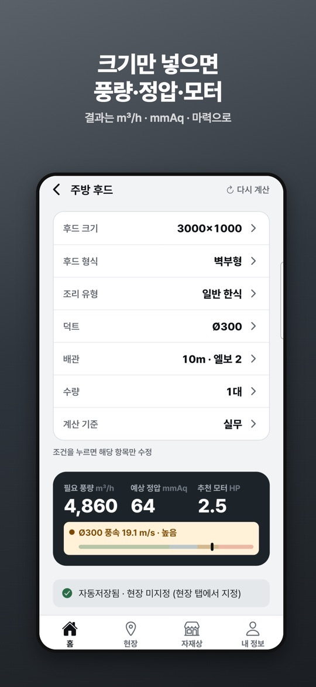
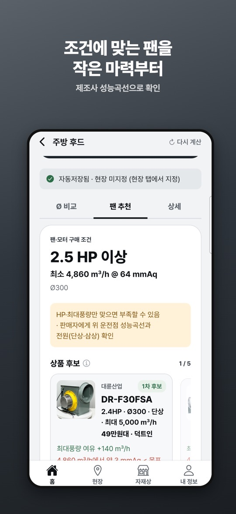
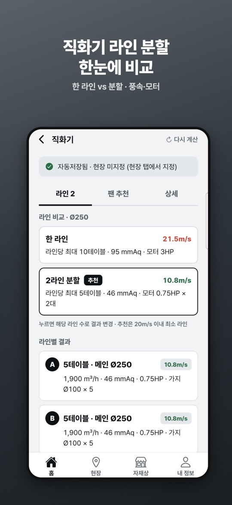

상업용 주방 닥트를 시공하는 기사님과 사장님을 위한 현장 계산기입니다. 후드 크기와 조리 유형, 덕트 파이, 배관 조건을 넣으면 필요 풍량(m³/h), 예상 정압(mmAq), 추천 모터 마력을 보여 줍니다.
무엇을 계산하나요
- 주방 후드: 후드 크기(W×D), 형식(벽부형·단독 아일랜드), 조리 유형, 덕트, 배관 길이와 엘보 수, 수량, 계산 기준을 넣어 풍량·정압·추천 마력을 구합니다. 덕트 파이별 풍속과 정압을 나란히 비교하고, 후드가 여러 대일 때 배관을 합칠지 따로 갈지도 계산합니다.
- 직화기(숯불·가스): 테이블 수와 메인 덕트 파이로 한 라인과 라인 분할을 풍속·정압·마력으로 비교합니다. 테이블 가지관 손실도 정압에 반영합니다.
- 전열교환기: 유동 인원(음식점·카페·매장·헬스장), 고정 인원(스터디카페·독서실·사무실·학원), 주거로 나눠 필요 환기량을 구하고 용량과 대수(예: 1,500 + 1,000)를 추천합니다.
- 팬 추천: 계산한 풍량과 마력에 맞는 시로코팬 후보를 작은 마력부터 보여 주고, 제조사 성능곡선으로 운전점을 충족하는지 표시합니다. 1.1.0부터 결과 화면에서 팬 추천이 먼저 보이고, 연구기준(ASHRAE) 값과의 비교가 추가되었습니다.
화면 구성과 기록
- 아래쪽 탭은 홈·현장·자재상·내 정보입니다. 홈에서 주방 후드, 직화기, 전열교환기 중 하나를 고릅니다.
- 결과 화면은 Ø 비교·팬 추천·상세 탭으로 나뉩니다(직화기는 첫 탭이 라인 수). 조건 줄을 누르면 그 항목만 고칠 수 있고, ‘다시 계산’으로 처음부터 입력합니다.
- 계산은 자동 저장됩니다. 현장 탭에서 현장을 지정해 정리하고, 계산 이력을 고정·삭제하며, 현장 사진과 메모를 붙일 수 있습니다.
- 자재상 탭에서 지역이나 주소를 입력하면 주변 닥트 자재 판매업체가 거리순으로 나오고, 전화 연결과 티맵 길찾기를 쓸 수 있습니다.
처음 시작하기
- 아래 스토어 링크에서 설치합니다. 로그인 없이 바로 쓸 수 있고, 스토어 설명에 따르면 위치 권한도 필요 없습니다.
- 홈에서 계산할 설비(주방 후드·직화기·전열교환기)를 고릅니다.
- 주방 후드라면 후드 크기, 형식, 조리 유형, 덕트 파이, 배관 길이·엘보, 수량을 차례로 넣습니다.
- 결과(풍량·정압·추천 마력)를 확인합니다. 스토어 설명에 따르면 계산 결과는 광고를 본 뒤 볼 수 있습니다.
- 팬 추천 탭에서 후보 팬의 운전점 여유를 보고, 필요하면 현장 탭에서 이 계산을 현장에 묶어 사진과 메모를 남깁니다.
현장에서 쓸 때 참고할 점
아래는 스토어 설명과 화면 안내를 바탕으로 한 사용 제안입니다. 앱의 결과는 검토용 예상값이며, 설계나 시공 판단을 대신하지 않습니다.
- 덕트 파이를 바꿔 가며 비교하세요. 같은 풍량이라도 파이에 따라 풍속과 정압이 달라집니다. 결과 화면의 풍속 막대가 ‘높음’으로 나오면 한 단계 큰 파이를 Ø 비교 탭에서 함께 보세요.
- 마력만 보고 팬을 고르지 마세요. 앱도 “HP·최대풍량만 맞으면 부족할 수 있음”이라고 안내합니다. 판매자에게 운전점 성능곡선과 전원(단상·삼상)을 확인하세요.
- 직화기 라인은 분할안도 보세요. 라인 비교 화면은 20m/s 이내에서 가장 적은 라인 수를 추천으로 표시합니다. 한 라인 결과의 풍속이 빨갛게 표시되면 분할안과 비교해 보세요.
- 견적 전에 현장으로 묶어 두세요. 계산이 자동 저장되더라도 현장 미지정 상태로 남으면 나중에 찾기 어렵습니다. 기록과 사진은 휴대폰에만 저장되므로 기기를 바꿀 때 유의하세요.
- 실측값으로 다시 확인하세요. 실제 시공 전에는 현장 조건과 팬 성능곡선을 꼭 확인하라는 것이 앱의 안내입니다.
스크린샷
App Store 한국 스토어에 게시된 공식 홍보용 스크린샷입니다(버전 1.1.0 기준, 홍보 문구 포함). 화면 속 값은 예시입니다.



자주 묻는 질문
- 계산 결과를 그대로 시공에 써도 되나요?
- 아닙니다. 스토어 설명에서 밝히듯 결과는 검토용 예상값입니다. 현장 실무 데이터로 보정한 값이지만, 실제 시공 전에는 현장 조건과 팬 성능곡선을 확인해야 합니다.
- 광고 없이 쓸 수 있나요?
- 계산 결과는 광고를 본 뒤 확인하는 방식입니다. 스토어 설명에 따르면 광고 제거 패키지(월 4,900원 자동 갱신 구독)를 구독하면 보상형·배너 광고 없이 쓸 수 있고, 각 스토어 계정 설정에서 해지할 수 있습니다. 가격은 바뀔 수 있으니 스토어에서 확인하세요.
- 로그인이나 위치 권한이 필요한가요?
- 필요 없다고 안내합니다. 자재상 검색은 지역이나 주소를 직접 입력하는 방식이며, 기록과 사진은 휴대폰에만 저장됩니다.
- 아이폰과 안드로이드에서 같은가요?
- 두 스토어 설명의 기능 목록은 같지만, 이 페이지에서 확인한 버전 번호는 App Store 1.1.0뿐입니다. Google Play는 2026년 10월 14일 업데이트이며 앱 소식 알림(내 정보 > 알림) 안내가 추가로 적혀 있습니다.
- 계산이 이상하거나 오류가 있으면요?
- 입력 조건이 보이는 결과 화면 캡처를 ricecookey.help@gmail.com으로 보내 주세요. 기기 모델과 앱 버전을 함께 적어 주시면 확인이 빠릅니다.
스토어 링크
무료 앱(광고·구독 포함)
iOS 16.4 이상, 연령 등급 4+(App Store 기준). App Store는 한국 스토어에서 확인했으며 미국 스토어 조회에서는 나오지 않았습니다. Google Play 표시: 광고 포함, 인앱 구매.
문의
질문, 요청, 버그 제보: ricecookey.help@gmail.com
참고 자료와 확인 범위
- App Store 페이지 — 버전 1.1.0(2026년 10월 14일 배포), 설명·업데이트 내용·스크린샷
- Google Play 페이지 — 2026년 10월 14일 업데이트, 설명과 광고·인앱 구매 표시
- 닥트몽 개인정보처리방침 — 스토어 설명에 적힌 링크
기능과 메뉴 이름은 2026년 10월 20일에 확인한 스토어 설명과 공식 스크린샷 문구를 따랐습니다. 업데이트로 달라질 수 있으며, 앱 안의 표시가 이 페이지보다 우선합니다.
English
Ductmong is an on-site calculator for people who install commercial kitchen ductwork in Korea. Enter the hood size, cooking type, duct diameter and piping, and it shows the required airflow (m³/h), estimated static pressure (mmAq) and a recommended motor horsepower. The app itself is in Korean.
What it calculates
- Kitchen hood: from hood size (W×D), type (wall-mounted or island), cooking type, duct, pipe length and elbows, quantity and calculation basis, it gives airflow, static pressure and recommended HP. It compares velocity and pressure across duct diameters and handles several hoods on merged or separate runs.
- Direct-fire grills (charcoal or gas): from the number of tables and the main duct diameter, it compares one line against split lines by velocity, pressure and HP, including branch losses for each table.
- Energy recovery ventilator: it estimates the ventilation needed for transient occupancy (restaurants, cafés, shops, gyms), fixed occupancy (study cafés, reading rooms, offices, academies) or homes, and suggests capacities and unit counts (for example 1,500 + 1,000).
- Fan recommendation: it lists sirocco fan candidates for the result, smallest HP first, and marks whether the manufacturer's performance curve meets the operating point. Since 1.1.0 the fan recommendation appears first and results can be compared with research-based (ASHRAE) values.
Screens and records
- The bottom tabs are Home, Sites, Suppliers and My info (Korean labels 홈·현장·자재상·내 정보). Home lets you choose a kitchen hood, direct-fire grill or ventilator calculation.
- Results are split into Ø comparison, Fan recommendation and Details tabs (for grills the first tab is the line count). Tap a condition row to edit just that item, or use Recalculate (다시 계산) to start over.
- Calculations save automatically. In the Sites tab you can file them under a job site, pin or delete history entries, and attach site photos and notes.
- In the Suppliers tab, enter an area or address to list nearby duct material suppliers by distance, with call and T map directions.
Getting started
- Install from the store links below. There is no sign-in, and the store description says no location permission is needed.
- On Home, pick the equipment to calculate: kitchen hood, direct-fire grill or ventilator.
- For a hood, enter size, type, cooking type, duct diameter, pipe length and elbows, and quantity.
- Check the result (airflow, pressure, recommended HP). According to the store description, results are shown after watching an ad.
- Review the fan candidates and their margin in the Fan recommendation tab, then attach the calculation to a site with photos and notes if needed.
Practical notes for site use
These suggestions are based on the store description and on-screen messages. Results are estimates for review and do not replace design or installation decisions.
- Compare duct diameters. The same airflow gives different velocity and pressure in different ducts. If the velocity bar reads “high”, look at the next size up in the Ø comparison tab.
- Don't pick a fan on HP alone. The app itself warns that matching HP and maximum airflow may not be enough. Ask the seller for the performance curve at the operating point and the power supply (single or three phase).
- Check the split option for grill lines. The line comparison marks the fewest lines that stay within 20 m/s as recommended. If the single-line velocity is shown in red, compare it with the split option.
- File calculations before quoting. Auto-saved results left without a site are harder to find later. Records and photos stay on the phone only, so keep that in mind when you change devices.
- Re-check with real measurements. The app asks you to confirm site conditions and the fan curve before installing.
Screenshots
Official promotional screenshots from the Korean App Store (version 1.1.0, with marketing captions in Korean). Values on screen are examples.
FAQ
- Can I build directly from the results?
- No. As the store description says, results are estimates for review. They are adjusted with field data, but site conditions and the fan curve must be checked before installation.
- Can I use it without ads?
- Results are shown after an ad. The store description lists an ad-removal subscription (KRW 4,900 per month, auto-renewing) that removes rewarded and banner ads and can be cancelled in your store account settings. Prices can change, so check the store.
- Does it need sign-in or location access?
- The listing says neither is needed. Supplier search uses an area or address you type, and records and photos are stored only on the phone.
- Is the iPhone version the same as Android?
- Both store descriptions list the same features, but the only version number checked here is App Store 1.1.0. Google Play shows an October 14, 2026 update and also mentions opt-in app news notifications (My info > Notifications).
- What if a result looks wrong?
- Send a screenshot of the result with its inputs to ricecookey.help@gmail.com. Including your device model and app version speeds things up.
Store links
Free app (ads and subscription)
Requires iOS 16.4 or later, rated 4+ (App Store). The App Store listing was found in the Korean storefront and not in a US storefront lookup. Google Play shows: Contains ads, In-app purchases.
Contact
Questions, requests and bug reports: ricecookey.help@gmail.com
References and scope
- App Store listing — version 1.1.0 (released October 14, 2026), description, release notes and screenshots
- Google Play listing — updated October 14, 2026; description, ads and in-app purchase labels
- Ductmong privacy policy — linked from the store description
Features and menu names follow the store descriptions and official screenshot text checked on October 20, 2026. Updates may change them, and what the app shows takes precedence over this page.